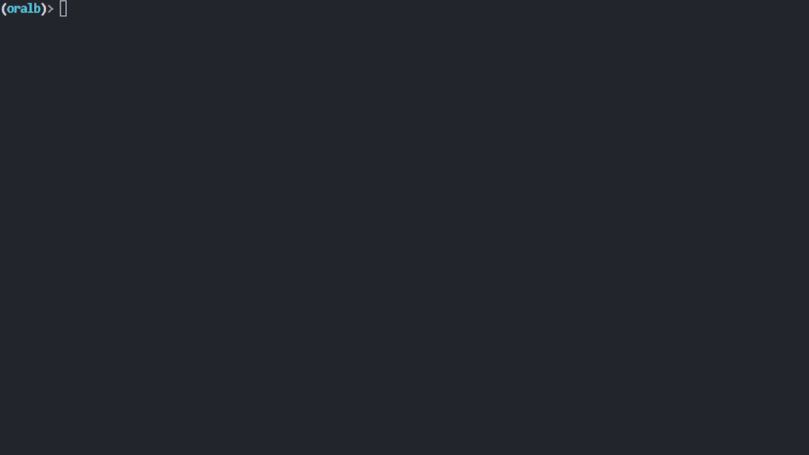

CLI Usage#
After installation completes, there will be an additional command that can be executed: oralbcli. It will
start an interactive command shell:
(venv-3.12.1) Python> oralbcli
(oralb)> # ...
Discovering devices#
Before we can connect to the device, we need its address. To list all local devices, use ble discover:

Sample device discovery#
Connecting to devices#
To establish a connection, the client will first connect to the device, then it tries to
pair with the device and lastly it writes a special command to extend the connection for
255 seconds.
Warning
Connecting can be painful sometimes, as you may need to call connect multiple times.
(oralb)> dm connect "74:B8:39:16:06:1B"
[ Ok ] Connected to '74:B8:39:16:06:1B'
Extending a connection#
If you wish to extend the current connection by another 255 seconds manually, there
is another command that can be utilized:
(oralb)> dm extend-connection
(oralb)>
Reading characteristics#
Characteristics can be selected on several ways:
Okay, lets break down the different options:
by-name: each characteristic stores an internal name, which can be used here to retrieve its value
by-cid: another way is to use the short UUID for device characteristics
by-uuid: or just past the whole UUID
Note
The response of unknown characteristics will be displayed as plain bytes.
Reading special data#
There are special commands that lets you read special device data such as a detailed SONOS type description, or service data information.
(oralb)> dm control read-meta sonos_type
SonosMetadata(
magic=255,
model=<Model.M6: 4>,
color=<Color.STORMY_GREY: 5>,
language=<Language.ENGLISH_EN: 0>,
brush_modes=[0, 1, 3, 2, 4, 7, 7, 7],
gum_guard=6
)
(oralb)> dm control read-data service_data_a
ServiceDataA(
ideal_full_capacity=0,
average_motor_current=0,
total_monitor_runtime=978,
total_pressure=34,
total_charge_time=28921
)
Writing characteristics (Experimental)#
It is also possible to apply new values to certain characteristics. Make sure to check whether
the characteristic supports the write operation before calling putchar.
(oralb)> dm putchar [$NAME | $CID] args
Here you have the option to use the characteristic’s name or its short UUID as described before.
You can view the list of required arguments using -h.
(oralb)> dm putchar smiley -h
usage: dm putchar smiley [-h] --face FACE
Smiley
options:
-h, --help show this help message and exit
--face FACE type: int
Listing implemented characteristics#
There is also a command that will display all services, characteristics or descriptors associated with a device. (You have to be connected in order to execute this command)
(oralb)> dm list services
[ Info ] Device services:
Device: FF:FF:FF:FF:FF:FF
├── 00001800-0000-1000-8000-00805f9b34fb (Handle: 1): 'Generic Access Profile'
│ ├── 00002a00-0000-1000-8000-00805f9b34fb (Handle: 2): 'Device Name' ['read', 'write-without-response', 'write']
...
├── a0f0ff00-5047-4d53-8208-4f72616c2d42 (Handle: 13): 'Unknown'
│ ├── a0f0ff01-5047-4d53-8208-4f72616c2d42 (Handle: 14): 'Handle ID' ['read']
│ ├── a0f0ff02-5047-4d53-8208-4f72616c2d42 (Handle: 17): 'Handle Type' ['read']
...
│ ├── a0f0ff0c-5047-4d53-8208-4f72616c2d42 (Handle: 55): 'Cache' ['read', 'write', 'notify']
│ └── a0f0ff0d-5047-4d53-8208-4f72616c2d42 (Handle: 59): 'Sensor Data' ['read', 'notify']
├── a0f0ff20-5047-4d53-8208-4f72616c2d42 (Handle: 63): 'Unknown'
│ ├── a0f0ff21-5047-4d53-8208-4f72616c2d42 (Handle: 64): 'Command Status' ['read', 'write', 'notify']
│ ├── a0f0ff22-5047-4d53-8208-4f72616c2d42 (Handle: 68): 'RTC' ['read', 'write']
...
└── a0f0ff80-5047-4d53-8208-4f72616c2d42 (Handle: 95): 'Unknown'
├── a0f0ff81-5047-4d53-8208-4f72616c2d42 (Handle: 96): 'OTA Command' ['read', 'write']
...